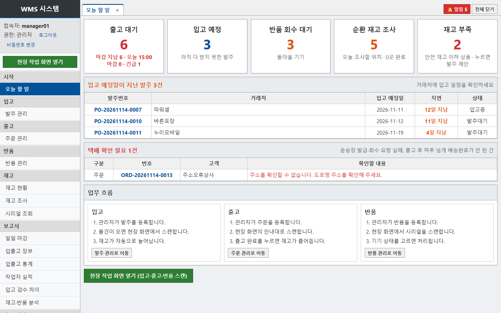
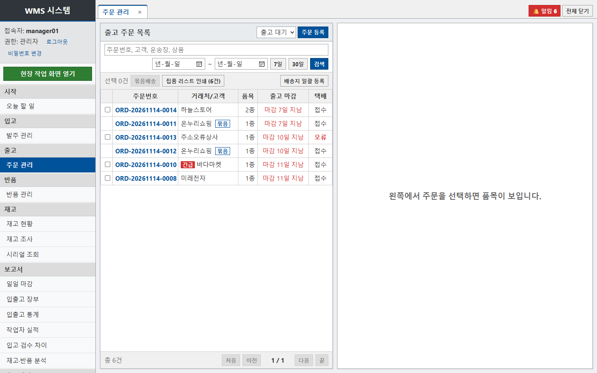
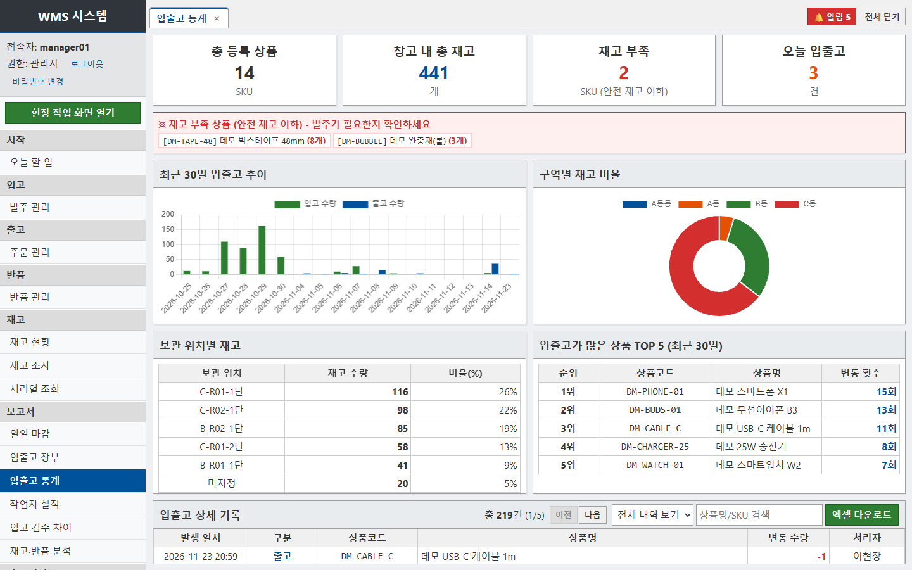
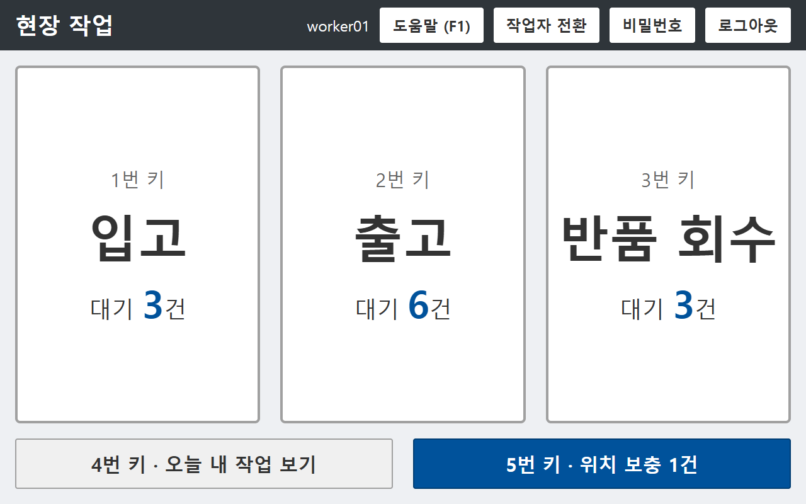
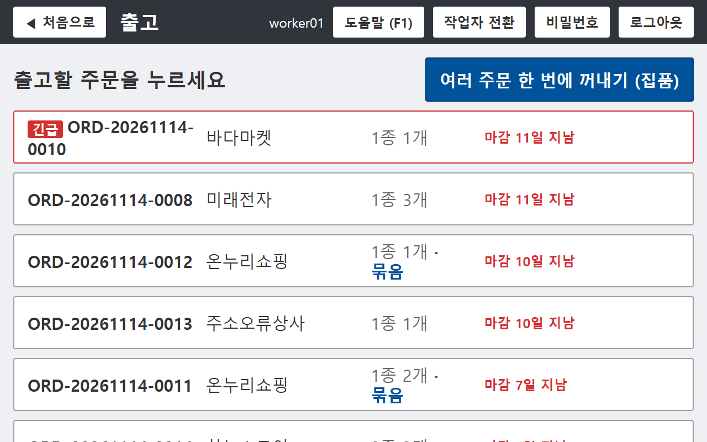
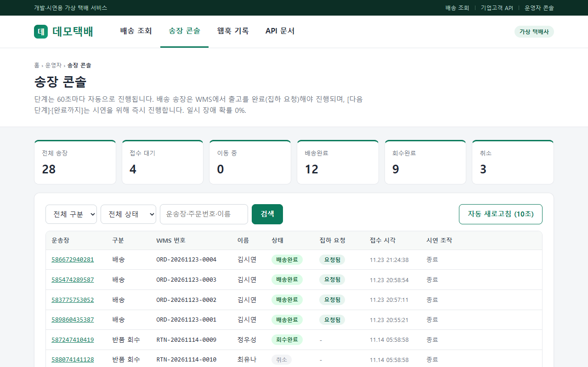

관리 화면






현장 화면 · 가상 택배사



화면은 시연용 데이터(seed_demo)로 캡처했습니다. 이름·연락처는 모두 가상의 값입니다.
WMS 물류관리시스템 포트폴리오5 / 6
물류센터에서 입출고·재고 실사·창고 운영을 10년 넘게 맡아 왔습니다. 그때 쓰던 물류 시스템은 간단한 수정 하나도 다른 부서에 업무를 요청해야 해서 과정이 복잡하고 시간이 오래 걸렸습니다. 현장에서 필요한 기능을 직접 만들 수 있어야 한다고 생각해 개발을 공부하기 시작했고, 현업에서 하던 업무를 기준으로 실제 업무에 쓸 수 있는 수준을 목표로 이 시스템을 만들었습니다.
| 현업에서 하던 일 | 이 프로젝트에서 구현한 기능 |
|---|---|
| 일일 실재고 마감 (1회/일) | 일일 마감: 처리 실적과 남은 일을 저장하고 알림 |
| 정기 재고 실사 (연 4회 이상) | 스캔 재고 조사, 오늘의 순환 재고 조사 |
| 장기 미회수·손망실 관리 | 반품 회수 관리, 시리얼 이력 추적, 폐기 처리 |
| 재고 시뮬레이션, 발주 시점 판단 | 발주 제안, 재고 일수·회전율·장기 재고 분석 |
| 오출고 줄이기 | 스캔 검수로 잘못된 상품 출고 차단, 택배 연동 |
엑셀과 종이로 하던 입출고·재고 관리에서 생기는 수량 불일치, 잘못된 출고, 추적 불가 문제를 줄이기 위해 만들었습니다. 관리자는 주문·발주·기준정보·보고서를 다루는 관리 화면을, 현장 작업자는 큰 글씨와 단축키 중심의 스캔 화면을 씁니다. 실제 택배사 대신 가상 택배사 서버를 직접 만들어 운송장 발급, 집하 요청, 서명된 웹훅까지 연동 흐름을 구현했습니다.
재고 정합성, 현장 사용성, 운영 가능성, 검증 체계를 중점에 두었고, 자세한 설계 결정은 3쪽에 정리했습니다.
| 입고 | 발주 등록, 발주 제안(안전 재고·최근 30일 출고량 기반), 스캔 입고, 입고 취소, 검수 차이(부족·파손·초과) 기록과 거래처별 차이율 보고서 |
|---|---|
| 재고 | 시리얼 상품과 수량 상품 겸용, 위치별 재고와 이동, 위치 보충, 스캔 재고 조사, 오늘의 순환 재고 조사, 재고 부족 알림 |
| 출고 | 주문 등록 시 운송장 자동 발급, 묶음배송, 부분 출고(남은 수량은 새 주문), 집품(여러 주문을 위치 순서로), 출고 마감 시각 기준 긴급·마감 정렬 |
| 택배 연동 | 가상 택배사 "데모택배": 운송장 발급·집하 요청·반품 회수, 상태 변경 웹훅(서명 검증), 연속 장애 감지 알림 |
| 반품 | 시리얼 또는 상품·수량 반품, 원래 주문 기준 수량 제한, 현장에서 재고 복귀·폐기 선택 |
| 보고·감사 | 일일 마감, 입출고 통계, 재고 일수·회전율·장기 재고·반품률 분석, 작업자 실적, 기준정보 변경 이력, 입출고 장부 |
| 계정·권한 | 관리자/현장작업자 권한 분리(화면·API 양쪽), 사원증 발급·로그인, 사용자 관리 |
| 알림 | 슬랙·디스코드 웹훅과 화면 안 알림(읽음 표시), 입고 지연 알림 명령 |
| 상품 · 위치 | 상품(Item) ─ 위치별 재고(ItemStock) ─ 보관 위치(WarehouseLocation), 상품 ─ 시리얼(ItemSerial) |
|---|---|
| 입고 | 거래처 ─ 발주서 ─ 발주 품목 ─ (입고된 시리얼, 검수 차이) |
| 출고 · 반품 | 출고 주문 ─ 주문 품목 ─ 출고한 시리얼 / 반품 주문 ─ 원래 주문, 시리얼 / 택배 이벤트 |
| 이력 | 입출고 장부(InventoryLog), 기준정보 변경 이력(MasterChange), 일일 마감, 알림 |
한눈에 보는 ERD는 4쪽에, 주요 컬럼을 포함한 영역별 ERD는 저장소의 docs/DESIGN.md에 있습니다.
문제 총재고와 위치별 재고가 어긋나면 "화면에는 있는데 선반에 없는" 일이 생깁니다.
해결 입고·출고·반품·이동·조정이 모두 stock.py의 add·remove·move를 거치게 했습니다. 위치별 합은 총재고를 넘지 않고, 모자라는 부분은 "위치 미지정" 재고로 보여 줍니다.
문제 두 작업자가 같은 상품을 동시에 옮기면 수량 확인을 함께 통과해 재고가 음수가 될 수 있습니다.
해결 요청 하나를 하나의 트랜잭션으로 처리(ATOMIC_REQUESTS)하고, 재고 행을 select_for_update로 잠근 뒤 F() 식으로 DB에서 직접 증감합니다. 모든 변경은 입출고 장부에 누가·언제·얼마나로 남깁니다.
문제 스마트폰은 한 대씩 추적하고, 케이블은 수량만 관리하는 등 상품마다 방식이 다릅니다.
해결 상품별로 시리얼 관리 여부를 정하고, 시리얼 상품은 1개씩 스캔하며 입고→출고 주문→반품 이력을 추적합니다. 시리얼 없이 있던 재고도 출고 때 시리얼을 붙여 점진적으로 전환할 수 있습니다.
해결 가상 택배사 서버를 만들어 HTTP API와 서명된 웹훅으로만 통신하게 하고, 택배사를 바꿀 때는 carrier.py만 교체하면 됩니다. 택배사 연속 장애는 감지해 알림을 보냅니다.
재고 변동은 입출고 장부(InventoryLog), 기준정보 변경은 변경 이력(MasterChange), 하루 실적은 일일 마감(DailyClose)에 남기고 처리자와 시각을 함께 기록합니다.
주요 컬럼만 표시했습니다. 모든 컬럼은 docs/DESIGN.md와 inventory/models.py에 있습니다.






화면은 시연용 데이터(seed_demo)로 캡처했습니다. 이름·연락처는 모두 가상의 값입니다.
| 단위 테스트 | Django TestCase 170개. 재고 증감, 권한, 로그인 제한, 택배 연동, 보고서 등 |
|---|---|
| 브라우저 테스트 | Playwright 32개. 실제 서버와 별도 테스트 DB로 발주→입고→출고→반품, 스캔 오류, 권한별 화면, 엑셀 등 업무 흐름 검증 |
| 정적 검사 | Ruff(백엔드), ESLint 경고 0개(프런트엔드) |
| 자동화 | 통합 검증 스크립트(verify.sh), pre-commit(커밋 시 검사), GitHub Actions CI(MariaDB 서비스로 push·PR마다 린트·테스트·빌드) |
| 변경 관리 | 기능 단위 커밋, 브랜치와 PR로 병합, 의존성은 안정 버전으로 정기 갱신 |
| 문서 | README(설치·운영·기능), docs/ARCHITECTURE.md(폴더 구조), docs/DESIGN.md(ERD·설계 결정), 화면설계서(v2.0) |
저장소 README의 "처음 설치" 안내대로 설치한 뒤, manage.py seed_demo로 시연 데이터를 만들고 npm run start를 실행하면 http://localhost:5173 에서 모든 메뉴를 눌러 볼 수 있습니다. 시연 계정은 관리자 manager01, 현장작업자 worker01 (공개용 데모 값)입니다.